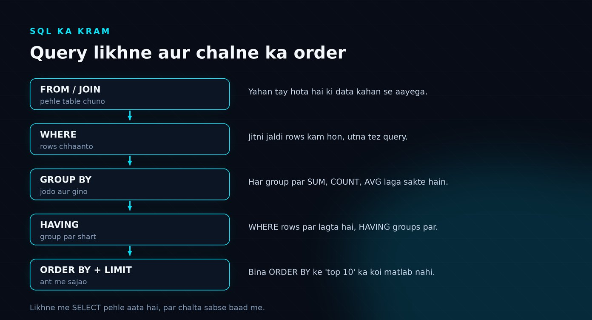
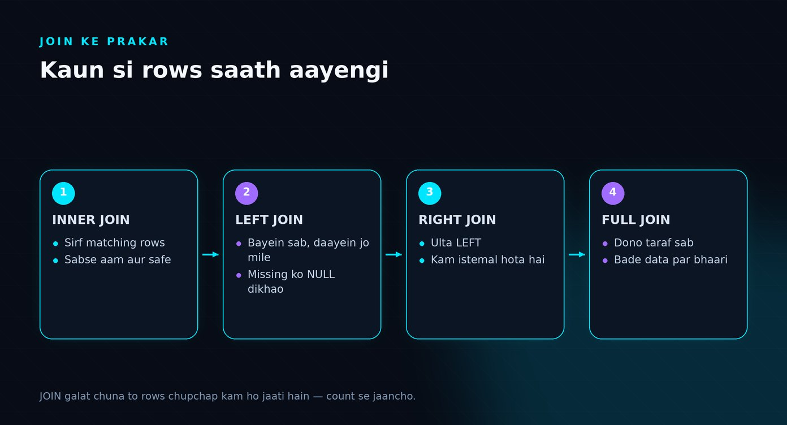

SQL Kya Hai? SELECT, JOIN aur GROUP BY Aasan Bhasha Me
हर company का data किसी table में बैठा होता है — customers, orders, payments, tickets. और उस data से सवाल पूछने की भाषा है SQL. "पिछले महीने किन 5 customers ने सबसे ज़्यादा खरीदा", "किस शहर में delivery सबसे धीमी है", "कितने orders बिना payment के पड़े हैं" — ये सब SQL में कुछ lines में पूछे जाते हैं।
इस guide में मैं SQL को बिल्कुल शुरुआत से खोलूँगा — table और key का मतलब, पहली query, query का असली क्रम, WHERE और GROUP BY, JOIN के चार प्रकार, आम functions, पाँच गलतियाँ, और मेरा अपना अनुभव। साथ में हर जगह असली दिखने वाले उदाहरण हैं, ताकि आप पढ़ते-पढ़ते खुद लिख सकें।
छोटा जवाब: SQL एक भाषा है जिससे हम database से data माँगते हैं। सबसे ज़रूरी चार हिस्से हैं — SELECT (क्या चाहिए), FROM (कहाँ से), WHERE (कौन सी rows), और GROUP BY (जोड़कर गिनना)। JOIN दो tables को जोड़ता है, ORDER BY नतीजा सजाता है, और LIMIT बताता है कि कितनी rows चाहिए। यही 90% काम है; बाकी सब इन्हीं के आसपास है।
SQL kya hai — table ka model
Relational database में data tables में रहता है। हर table में rows (records) और columns (fields) होते हैं। जैसे customers table में id, name, city, signup_date — और हर row एक customer.
हर table में एक primary key होती है — ऐसा column जो हर row के लिए अलग हो, आमतौर पर id. दूसरी table उसी key को foreign key के रूप में रखती है। जैसे orders table में customer_id बताता है कि यह order किसका है। यही रिश्ता दो tables को जोड़ता है — और यही "relational" का मतलब है।
SQL लगभग हर database में थोड़ा-बहुत एक जैसा है — PostgreSQL, MySQL, SQL Server, SQLite. शुरुआत में किसी एक पर सीखें; दूसरे में बस कुछ फर्क मिलेंगे।
पहली query
मान लीजिए orders table में id, customer_id, amount, status, created_at हैं। सारे orders देखने के लिए:
SELECT id, customer_id, amount, status, created_at
FROM orders
ORDER BY created_at DESC
LIMIT 20;यहाँ तीन चीज़ें हो रही हैं: कौन से columns चाहिए, किस table से, और नतीजा कैसे सजाना है। LIMIT 20 सिर्फ़ 20 rows देता है — बड़े table पर यह आदत ज़रूरी है, वरना query और आपका tool दोनों अटक जाते हैं।
कुछ rows ऐसी चाहिए जिनमें शर्त हो:
SELECT id, amount
FROM orders
WHERE status = 'pending' AND amount > 5000
ORDER BY amount DESC;ध्यान दें कि text 'pending' single quotes में है और number बिना quotes के। यही सबसे आम शुरुआती गलती है — quotes गलत जगह लगाने से query चलती नहीं।
Query ka असली kram

यह क्रम समझना बहुत काम आता है, क्योंकि इससे पता चलता है कि कौन सी चीज़ कहाँ लिखी जाती है। Database पहले table चुनता है, फिर rows छाँटता है, फिर groups बनाता है, फिर groups पर शर्त लगाता है, फिर सजाता है, और अंत में columns चुनता है।
इसीलिए WHERE में aggregate function नहीं लिख सकते — जैसे WHERE SUM(amount) > 10000 गलत है। उसके लिए HAVING है, क्योंकि वह groups बनने के बाद चलता है।
GROUP BY: जोड़कर गिनना
सबसे ज़्यादा काम इसी से होता है। हर customer के कुल orders और कुल खर्च:
SELECT customer_id,
COUNT(*) AS orders,
SUM(amount) AS total_spent
FROM orders
WHERE status = 'completed'
GROUP BY customer_id
HAVING SUM(amount) > 20000
ORDER BY total_spent DESC;यहाँ तीन बातें देखें। COUNT(*) rows गिनता है। SUM(amount) जोड़ता है। और HAVING उन groups को हटाता है जिनका कुल 20,000 से कम है — यह WHERE से अलग है, क्योंकि WHERE rows पर लगता है और HAVING groups पर।
NULL ka hisaab
NULL का मतलब खाली या शून्य नहीं, बल्कि "पता नहीं" होता है। इसीलिए NULL = NULL सच नहीं होता और COUNT(column) NULL वाली rows नहीं गिनता, जबकि COUNT(*) सब गिनता है। जब किसी column में NULL हों, तो SUM उन्हें छोड़ देता है और AVG का हर भी बदल जाता है — इसलिए रिपोर्ट में हमेशा बताएँ कि कितनी rows में value missing थी।
एक नियम याद रखें: जो column GROUP BY में नहीं है और जिस पर aggregate नहीं लगाया, उसे SELECT में लिखने से database error देगा (या गलत नतीजा)। यही नियम सबसे ज़्यादा confusion पैदा करता है।
JOIN: दो tables जोड़ना

अब मान लीजिए customer का नाम भी चाहिए, जो customers table में है:
SELECT c.name,
COUNT(o.id) AS orders,
COALESCE(SUM(o.amount), 0) AS total
FROM customers c
LEFT JOIN orders o ON o.customer_id = c.id
GROUP BY c.name
ORDER BY total DESC;LEFT JOIN का मतलब है — बाईं table के सारे customers रखो, चाहे उनका कोई order न हो। ऐसे customers के लिए order वाले columns NULL आएँगे, और COALESCE उन्हें 0 बना देता है। अगर INNER JOIN लगाते, तो बिना order वाले customers नतीजे में ही नहीं आते — और आपको पता भी नहीं चलता।
यही वजह है कि JOIN बदलने के बाद हमेशा row count जाँचें। एक छोटा सा बदल हज़ार rows का नतीजा बदल सकता है, और नतीजा सही दिखता रहता है।
Subquery aur CTE
जब सवाल दो कदम का हो, तो अंदर query लिखी जाती है। जैसे "उन customers के orders जिन्होंने पिछले महीने खरीदा":
WITH recent AS (
SELECT DISTINCT customer_id
FROM orders
WHERE created_at >= DATE '2026-10-01'
)
SELECT c.name, COUNT(*) AS orders
FROM customers c
JOIN recent r ON r.customer_id = c.id
JOIN orders o ON o.customer_id = c.id
GROUP BY c.name;WITH वाला हिस्सा CTE कहलाता है — यह query को छोटे हिस्सों में बाँटता है और पढ़ना आसान बनाता है। बड़ी query में मैं हमेशा CTE इस्तेमाल करता हूँ, क्योंकि बाद में खुद को ही समझना होता है कि कौन सा हिस्सा क्या कर रहा है।
10 cheezein jo roz kaam aati hain
| क्या | काम |
|---|---|
| COUNT / SUM / AVG | गिनना, जोड़ना, औसत |
| MIN / MAX | सबसे छोटा और बड़ा |
| COALESCE | NULL की जगह value |
| CASE WHEN | if-else जैसा column |
| ROUND | दशमलव सीमित करना |
| DATE_TRUNC | महीने या हफ़्ते में जोड़ना |
| DISTINCT | दोहराव हटाना |
| ILIKE / LOWER | case छोड़कर खोजना |
| IN / BETWEEN | कई values या range |
| LIMIT / OFFSET | पेज बाँटना |
paanch galtiyan jo mehngi padti hain
1. बिना WHERE के UPDATE या DELETE. एक line की गलती पूरी table खाली कर सकती है। पहले वही शर्त SELECT में चलाएँ, rows देखें, फिर UPDATE करें।
2. SELECT * बड़े table पर। 40 columns में से 4 चाहिए तो 4 लिखें। इससे query तेज़ होती है और नतीजा पढ़ना आसान रहता है।
3. NULL को = से जाँचना। WHERE city = NULL कभी सही नहीं चलता; इसके लिए IS NULL लिखें।
4. Date को text की तरह रखना। '01-12-2026' जैसे text पर sorting और range query गलत नतीजे देते हैं। Date को date type में रखें।
5. JOIN के बाद count न जाँचना। JOIN से rows बढ़ या घट सकती हैं। नतीजा भेजने से पहले एक बार गिनती मिलाएँ।
SQL सीखने के बाद अगला कदम समझना होता है कि query धीमी क्यों होती है — उसका जवाब index में है, और मैंने उसे इसी batch की अगली पोस्ट के लिए रखा है। Data के साथ काम करना है तो data science roadmap पढ़ें, और अगर अपनी app से data निकालना है तो API basics काम आएँगे।
Query tez karne ke paanch tarike
जब query धीमी हो, तो पहला काम है EXPLAIN चलाना — वह बताता है कि database कितनी rows पढ़ रहा है और कहाँ index इस्तेमाल हुआ। पाँच आदतें जो सबसे ज़्यादा फर्क लाती हैं।
- WHERE वाले columns पर index। जिस column से rows छाँटते हैं, उस पर index होना चाहिए।
- Column पर function न लगाएँ।
WHERE DATE(created_at) = '2026-11-01'index नहीं लगने देता; range लिखें —created_at >= '2026-11-01' AND created_at < '2026-11-02'. - सिर्फ़ ज़रूरी columns चुनें।
SELECT *बड़े table पर बहुत data खींचता है। - JOIN से पहले rows कम करें। WHERE पहले लगे, JOIN बाद में — इससे जोड़ने का काम ही कम हो जाता है।
- LIMIT का दुरुपयोग न करें। LIMIT सिर्फ़ नतीजा रोकता है; database फिर भी सारा काम करता है।
Index की एक कीमत भी होती है — हर insert और update पर वह भी अपडेट होता है। इसलिए हर column पर index न लगाएँ, सिर्फ़ उन पर जो सच में खोज और JOIN में आते हैं।
Practice के लिए सबसे अच्छा तरीका है एक छोटा sample database (जैसे employees और orders) लेकर रोज़ चार-पाँच सवाल हल करना। हर सवाल में पहले सोचें कि कौन सी table चाहिए, फिर GROUP BY, फिर JOIN — यही क्रम interview में भी काम आता है।
Mera anubhav
मैंने पहले साल SQL में सब कुछ एक ही बड़ी query में लिखा — पाँच JOIN, तीन subquery, और अंत में एक ORDER BY. वह चलती थी, पर जब नतीजा गलत आता, तो पता ही नहीं चलता कि कौन सा हिस्सा दोषी है। फिर मैंने CTE की आदत डाली और हर हिस्से को अलग नाम दिया। अब गलती ढूँढ़ना मिनटों का काम है।
दूसरी बात जो मैंने सीखी: query लिखने से पहले कागज़ पर लिखें कि नतीजा कैसा दिखना चाहिए — कौन से columns, कितनी rows, किस क्रम में। आधे सवाल इसी से हल हो जाते हैं, क्योंकि तब पता होता है कि GROUP BY चाहिए या नहीं।
एक और आदत जो मैंने डाली — हर बार-बार वाली query को नाम देकर save करना। महीने में तीन बार वही report बनाने की जगह एक बार लिखकर रखने से समय भी बचता है और गिनती भी एक जैसी रहती है।
तीसरी बात: हर query के बाद एक छोटा सवाल पूछें — "यह नतीजा किस वजह से गलत हो सकता है?" अक्सर जवाब होता है duplicate rows, NULL values, या timezone. यही तीन चीज़ें सबसे ज़्यादा reports को गलत बनाती हैं।
नतीजा
SQL सीखने के लिए चार चीज़ें काफ़ी हैं: SELECT और WHERE, GROUP BY के साथ COUNT/SUM, LEFT JOIN, और ORDER BY के साथ LIMIT. इनसे आप 90% सवाल हल कर सकते हैं। शुरुआत में छोटी query लिखें, नतीजा देखें, फिर उसमें एक-एक हिस्सा जोड़ें — एक बार में पूरी बड़ी query लिखने से debugging मुश्किल हो जाती है।
Interview ke chhah sawal
SQL के interview में लगभग वही छह सवाल आते हैं। इनका अभ्यास कर लें, तो बाकी आसान लगेगा।
1. दूसरी सबसे बड़ी salary कैसे निकालें? LIMIT 1 OFFSET 1 काम करता है, पर ties पर गलत हो सकता है। बेहतर जवाब है DENSE_RANK() वाला window function।
2. Duplicate rows कैसे ढूँढें? GROUP BY के साथ COUNT(*) > 1 — और साथ में बताएँ कि कौन सी row रखनी है।
3. दो tables में कौन सी rows missing हैं? LEFT JOIN के बाद WHERE b.id IS NULL — यह pattern बहुत काम आता है।
4. हर group की top 1 row? यहाँ window function ROW_NUMBER() OVER (PARTITION BY ...) चाहिए। यह सवाल आम है और इससे पता चलता है कि आपने basics से आगे पढ़ा है।
5. NULL और शून्य में फर्क? ऊपर वाला जवाब दोहराएँ — NULL "पता नहीं" है, 0 एक value है।
6. Query धीमी क्यों है? पहले EXPLAIN, फिर index, फिर rows की गिनती। जवाब में अंदाज़ा न दें, जाँचने का तरीका बताएँ।
अक्सर पूछे जाने वाले सवाल
SQL और MySQL में फर्क?
SQL भाषा है, MySQL उसे चलाने वाला database है। PostgreSQL, SQL Server और SQLite भी वही भाषा इस्तेमाल करते हैं, कुछ अंतर के साथ।
SQL सीखने में कितना समय लगता है?
बुनियादी queries दो हफ़्ते में आ जाती हैं। JOIN और GROUP BY पर अच्छा होने में एक महीना रोज़ practice चाहिए।
क्या SQL बिना programming के सीख सकते हैं?
हाँ। SQL की अपनी भाषा है और उसे लिखने के लिए कोई दूसरी language नहीं चाहिए। Logic समझना ज़रूरी है।
सबसे पहले कौन सा database इस्तेमाल करें?
सीखने के लिए SQLite सबसे आसान है क्योंकि कुछ install नहीं करना पड़ता। असली काम के लिए PostgreSQL आज सबसे आम और मज़बूत विकल्प है।
क्या SQL अब भी ज़रूरी है?
पहले से ज़्यादा। हर analytics tool, हर dashboard और हर data job के पीछे SQL है — चाहे आप Python इस्तेमाल करें, data वहीं से आता है।